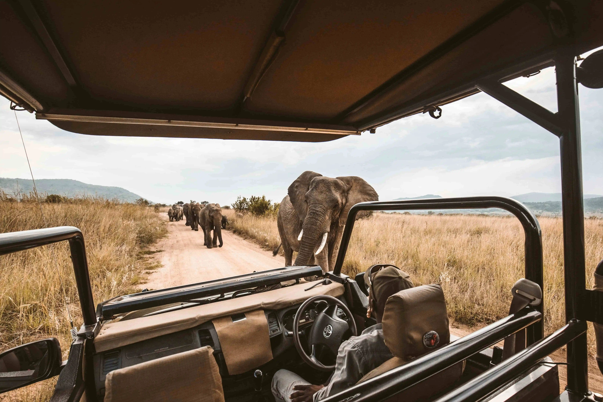
Experiencias Inolvidables
En Nuru Safari cada experiencia puede adaptarse a su ritmo, sus intereses y la forma en que desea descubrir África.
Diseñar mi experienciaLa sabana no se visita, se vive
Cada día en Nuru puede convertirse en una historia distinta, descubre África desde una perspectiva que pocos llegan a conocer.
-
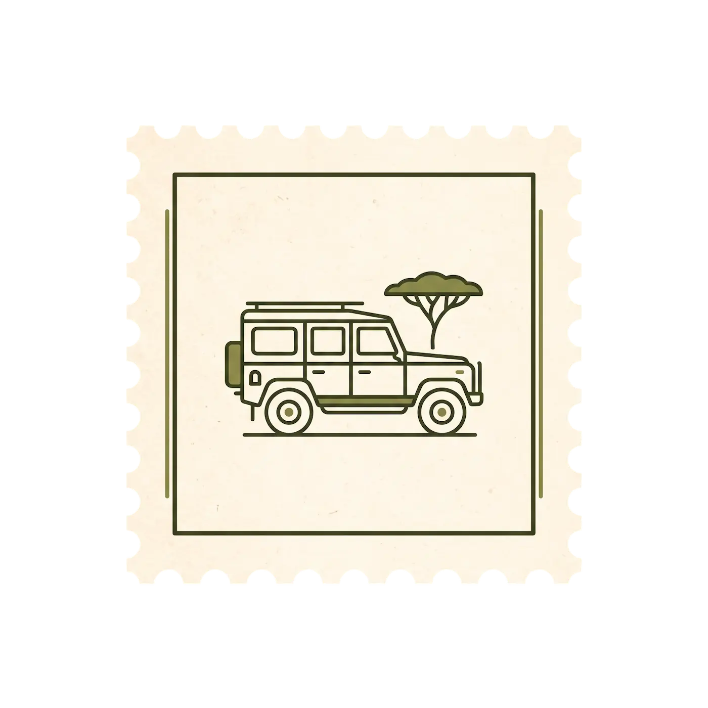
Safari privado
-
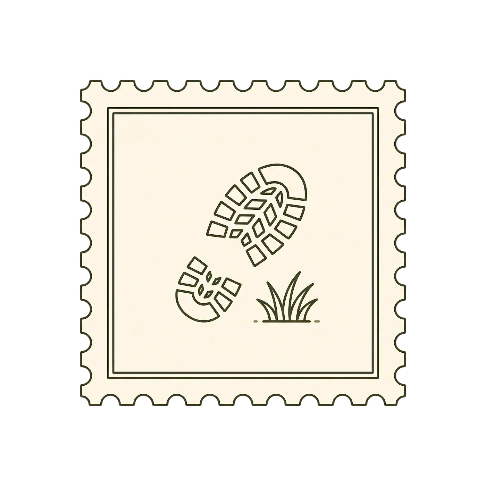
Safari a pie
-
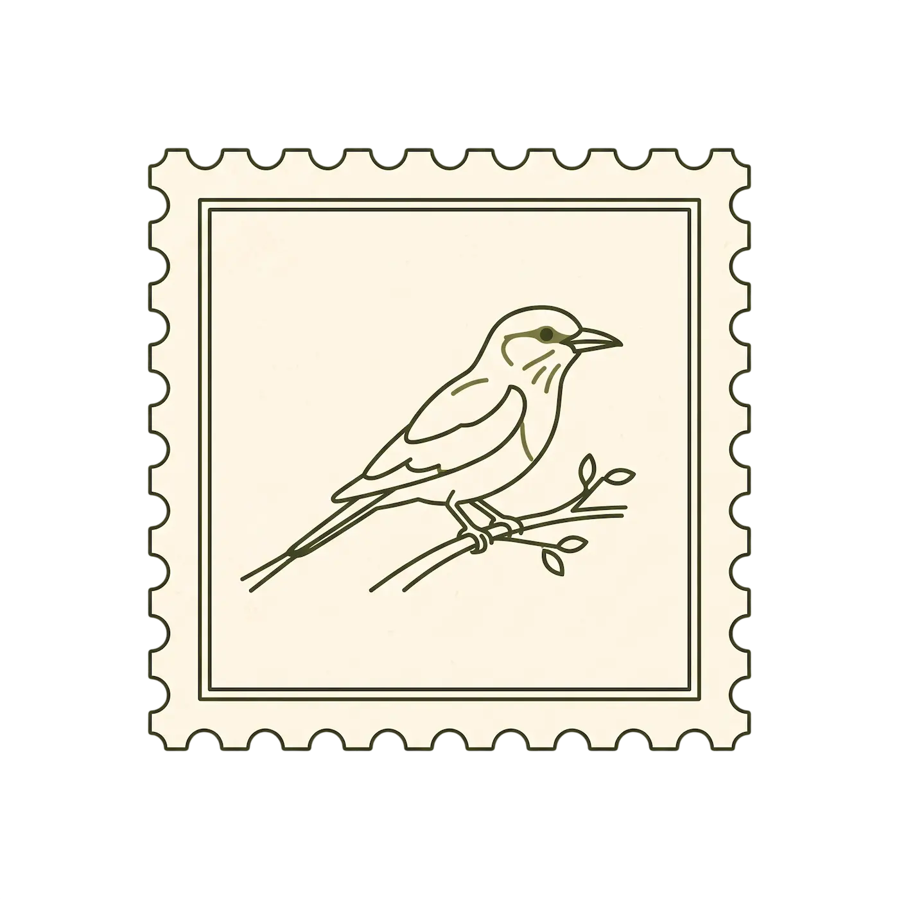
Avistamiento de aves
-
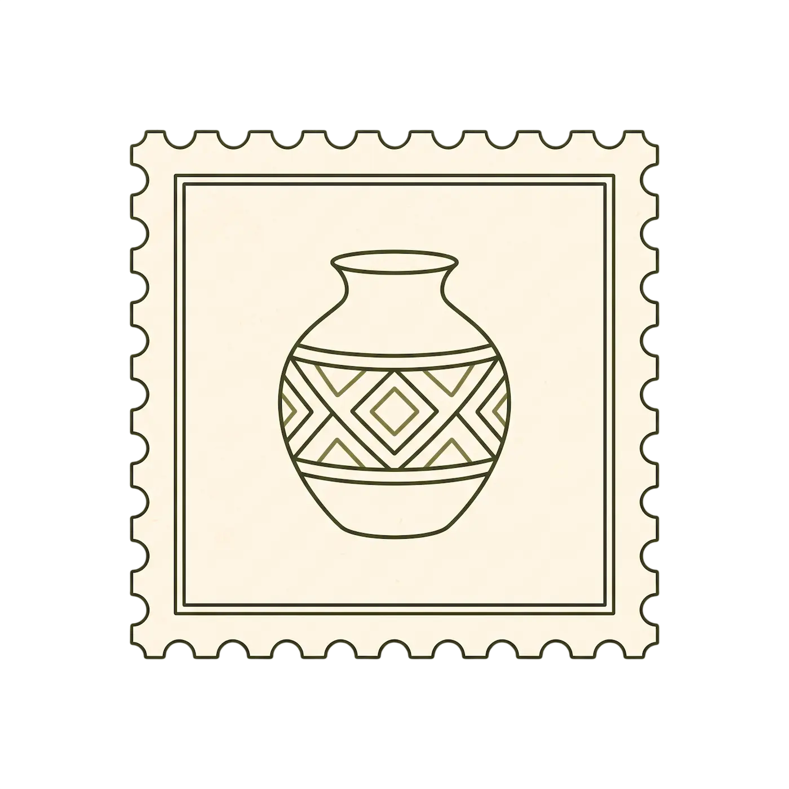
Inmersión cultural
-
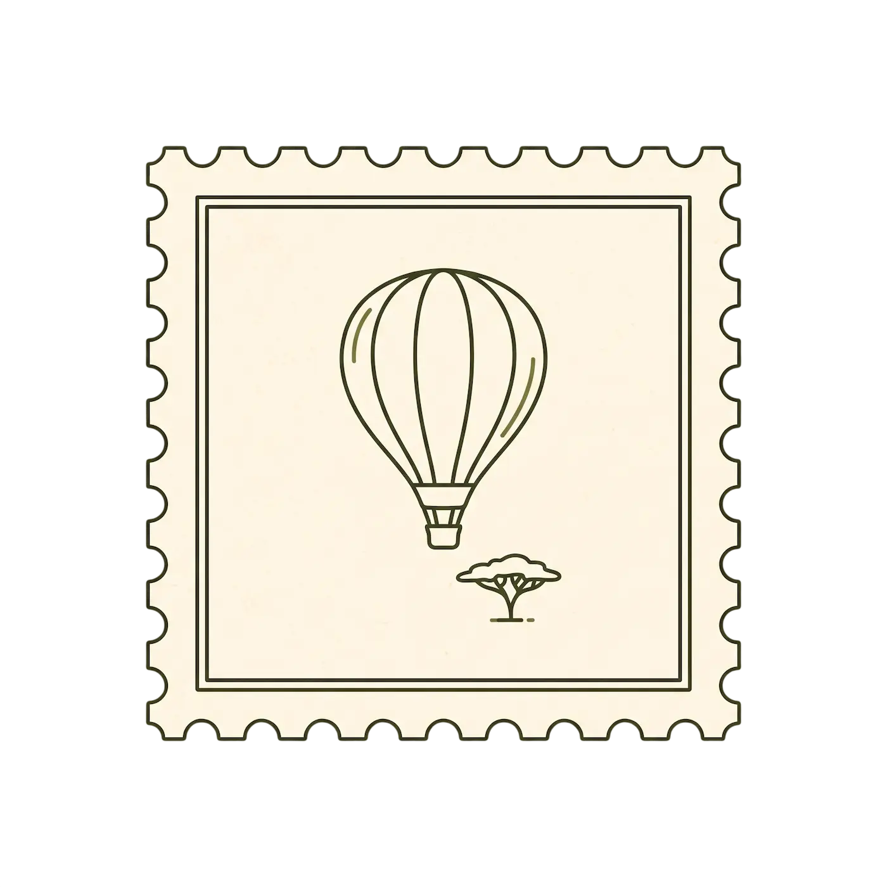
Vuelo en globo
El Lujo de No Tener Prisa
Es libertad para detener el tiempo. Seguir una huella inesperada, permanecer un poco más junto a una manada o cambiar el rumbo cuando la sabana revela algo extraordinario. Cada recorrido se adapta a su ritmo, acompañado por un guía experto y sin prisas.
- Vehículo privado
- Guía experto
- Horarios a su ritmo
- Desayunos y comidas en ruta
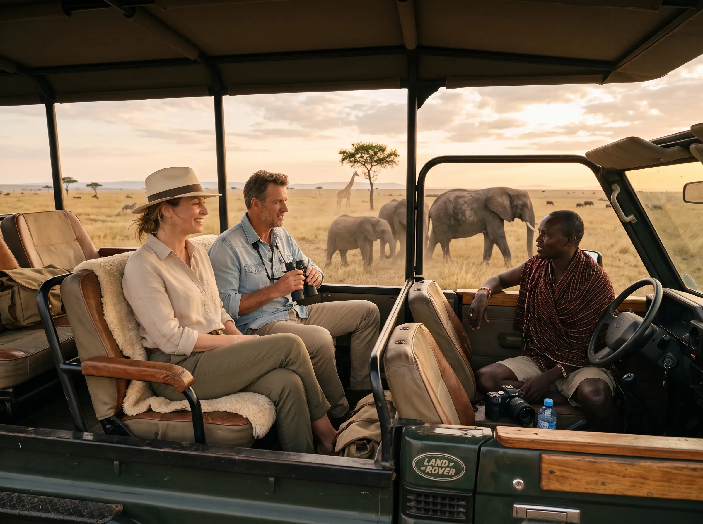
También Hay Momentos para Quedarse
No todas las experiencias requieren salir en busca de algo.Algunas suceden alrededor de una mesa,junto al fuego o simplemente contemplando cómo termina el día.
-
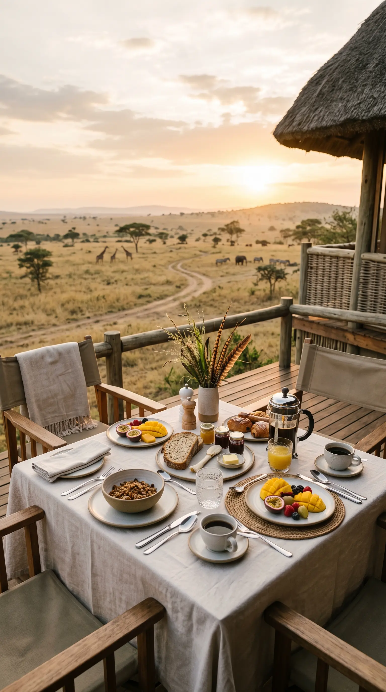
GastronomíaDesayunos en la Sabana
Después del safari matutino, una mesa aparece en mita ddel paisaje para prolongar la mañana sin prisas.
-
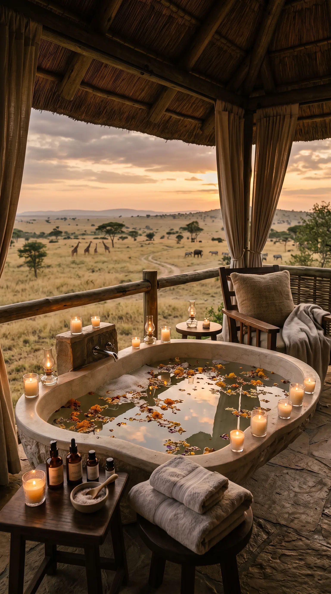
BienestarRituales de Bienestar
Masajes y tratamientos inspirados en ingredientes naturales para recuperar la calma después de un día de exploración.
-
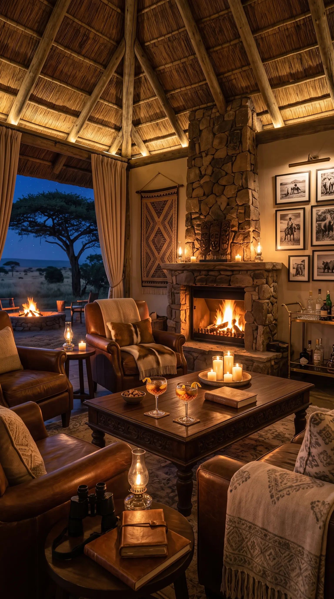
Noches en NuruFuego & Estrellas
Cócteles, conversaciones y silencio alrededor del fuego mientras el cielo africano ocupa todo lo demás.
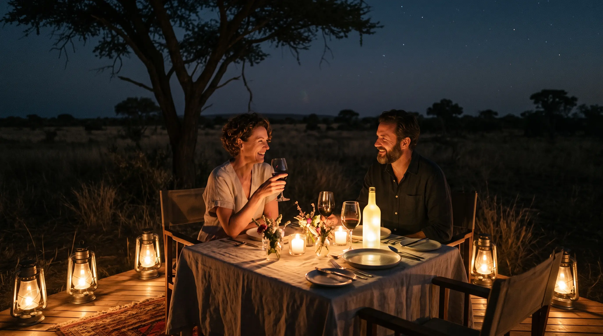
Celebraciones en Medio de lo Inesperado
Aniversarios, propuestas, cumpleaños o simplemente una fecha que merece convertirse en recuerdo. Nuestro equipo puede transformar un rincón de la sabana en un escenario diseñado únicamente para ustedes.
Planear una celebración